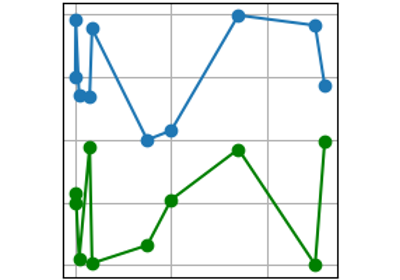
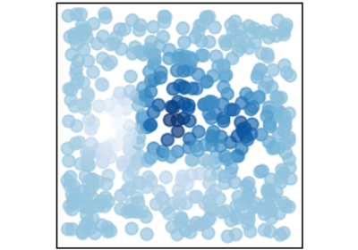
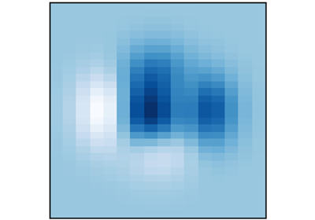
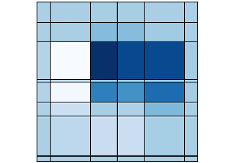
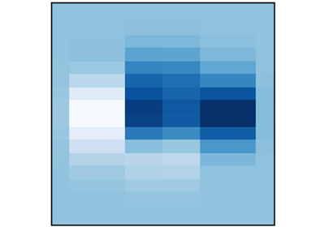
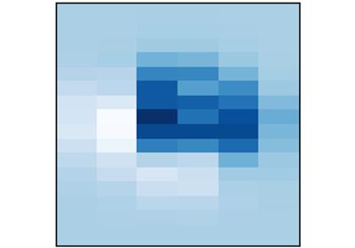

3.3.1.67. NXdata¶
Status:
base class, extends NXobject
Description:
The :ref:`NXdata` class is designed to encapsulate all the information required ...
The NXdata class is designed to encapsulate all the information required for a set of data to be plotted. NXdata groups contain plottable data (also referred to as signals or dependent variables) and their associated axis coordinates (also referred to as axes or independent variables).
The actual names of the DATA and AXISNAME fields can be chosen freely, as indicated by the upper case (this is a common convention in all NeXus classes).
Note
NXdataprovides data and coordinates to be plotted but does not describe how the data is to be plotted or even the dimensionality of the plot. https://www.nexusformat.org/NIAC2018Minutes.html#nxdata-plottype–attributeUsage
Curve2D ScatterImage2D Histogram2D Mixed-Histogram2D Continuous scanExample of a simple curve plot
data:NXdata @signal = "data" @axes = ["x"] data: float[100] x: float[100]More complex cases are supported
histogram data:
xhas one more value thandata.alternative axes: instead of a single
xaxis you can have several axes, one of which being the default.signals with more than one dimension:
datacould be 2D with axesxandyalong each dimension.axes with more than one dimension:
datacould be 2D with axesxandyalso being 2D, providing a unique(x, y)coordinate for eachdatapoint.Signals:
Defined by
DATA fields
the signal attribute
the auxiliary_signals attribute
The DATA fields contain the signal values to be plotted. The name of the field to be used as the default plot signal is provided by the signal attribute. The names of the fields to be used as secondary plot signals are provided by the auxiliary_signals attribute.
An example with three signals, one of which being the default
data:NXdata @signal = "data1" @auxiliary_signals = ["data2", "data3"] data1: float[10,20,30] # the default signal data2: float[10,20,30] data3: float[10,20,30]Axes:
Defined by
AXISNAME fields
the axes attribute
AXISNAME_indices attributes
The fields and attributes are defined as follows
The AXISNAME fields contain the axis coordinates associated with the signal values.
The axes attribute provides the names of the AXISNAME fields to be used as the default axis for each dimension of the DATA fields.
The AXISNAME_indices attributes describe the DATA dimensions spanned by the corresponding AXISNAME fields.
The fields and attributes have the following constraints
The length of the axes attribute must be equal to the rank of the DATA fields. When a particular dimension has no default axis, the string “.” is used in that position.
The number of values in AXISNAME_indices must be equal to the rank of the corresponding AXISNAME field.
When AXISNAME_indices is missing for a given AXISNAME field, the positions of the AXISNAME field name in the axes attribute are used.
When AXISNAME_indices is the same as the indices of “AXISNAME” in the axes attribute, there is no need to provide AXISNAME_indices.
The indices of “AXISNAME” in the axes attribute must be a subset of AXISNAME_indices.
The shape of an AXISNAME field must correspond to the shape of the DATA dimensions it spans. This means that for each dimension
iin[0, AXISNAME.ndim)spanned by axis field AXISNAME, the number of axis valuesAXISNAME.shape[i]along dimensionimust be equal to the number of data pointsDATA.shape[AXISNAME_indices[i]]along dimensionior one more than the number of data pointsDATA.shape[AXISNAME_indices[i]]+1in case the AXISNAME field contains histogram bin edges along dimensioni.Highlight consequences of these constraints
An AXISNAME field can have more than one dimension and can therefore span more than one DATA dimension. Conversely, one DATA dimension can be spanned by more than one AXISNAME field. The default axis name (if any) of each dimension can be found in the axes attribute.
A list of all available axes is not provided directly. All strings in the axes attribute (excluding the “.” string) are axis field names. In addition the prefix of an attribute ending with the string “_indices” is also an axis field name.
The following example covers all axes features supported (see 2D Continuous scan)
data:NXdata @signal = "data" @axes = ["x_set", "y_set", "."] # default axes for all three dimensions @x_encoder_indices = [0, 1] @y_encoder_indices = 1 # or [1] data: float[10,7,1024] x_encoder: float[11,7] # coordinates along the first and second dimensions y_encoder: float[7] # coordinates along the second dimension x_set: float[10] # default coordinates along the first dimension y_set: float[7] # default coordinates along the second dimensionUncertainties:
Defined by
FIELDNAME_errors fields
Standard deviations on data values as well as coordinates can be provided by FIELDNAME_errors fields where
FIELDNAMEis the name of a DATA field or an AXISNAME field.An example of uncertainties on the signal, auxiliary signals and axis coordinates
data:NXdata @signal = "data1" @auxiliary_signals = ["data2", "data3"] @axes = ["x", ".", "z"] data1: float[10,20,30] data2: float[10,20,30] data3: float[10,20,30] x: float[10] z: float[30] data1_errors: float[10,20,30] data2_errors: float[10,20,30] data3_errors: float[10,20,30] x_errors: float[10] z_errors: float[30]

Symbols:
These symbols will be used below to coordinate fields with the same shape.
dataRank: rank of the
DATAfield(s)nx: length of the
xfieldny: length of the
yfieldnz: length of the
zfield
- Groups cited:
none
Structure:
@signal: (optional) NX_CHAR
The value is the :ref:`name
` of the signal that contains ... The value is the name of the signal that contains the default plottable data. This field or link must exist and be a direct child of this NXdata group.
It is recommended (as of NIAC2014) to use this attribute rather than adding a signal attribute to the field. See https://www.nexusformat.org/2014_How_to_find_default_data.html for a summary of the discussion.
@auxiliary_signals: (optional) NX_CHAR
Array of strings holding the :ref:`names
` of additional ... Array of strings holding the names of additional signals to be plotted with the default signal. These fields or links must exist and be direct children of this NXdata group.
Each auxiliary signal needs to be of the same shape as the default signal.
@default_slice: (optional) NX_CHAR_OR_NUMBER
Which slice of data to show in a plot by default. This is useful especially fo ...
Which slice of data to show in a plot by default. This is useful especially for datasets with more than 2 dimensions.
Should be an array of length equal to the number of dimensions in the data, with the following possible values:
“.”: All the data in this dimension should be included
Integer: Only this slice should be used.
String: Only this slice should be used. Use if
AXISNAMEis a string array.Example:
data:NXdata @signal = "data" @axes = ["image_id", "channel", ".", "."] @image_id_indices = 0 @channel_indices = 1 @default_slice = [".", "difference", ".", "."] image_id = [1, ..., nP] channel = ["threshold_1", "threshold_2", "difference"] data = uint[nP, nC, i, j]Here, a data array with four dimensions, including the number of images (nP) and number of channels (nC), specifies more dimensions than can be visualized with a 2D image viewer for a given image. Therefore the default_slice attribute specifies that the “difference” channel should be shown by default.
Alternate version using an integer would look like this (note 2 is a string):
data:NXdata @signal = "data" @axes = ["image_id", "channel", ".", "."] @image_id_indices = 0 @channel_indices = 1 @default_slice = [".", "2", ".", "."] image_id = [1, ..., nP] channel = ["threshold_1", "threshold_2", "difference"] data = uint[nP, nC, i, j]@AXISNAME_indices: (optional) NX_INT
The ``AXISNAME_indices`` attribute is a single integer or an array of integers ...
The
AXISNAME_indicesattribute is a single integer or an array of integers that defines which DATA dimensions are spanned by the corresponding axis. The first dimension index is0(zero).The number of indices must be equal to the rank of the AXISNAME field.
When the
AXISNAME_indicesattribute is missing for a given AXISNAME field, its value becomes the index (or indices) of the AXISNAME name in the axes attribute.Note
When
AXISNAME_indicescontains multiple integers, it must be saved as an actual array of integers and not a comma separated string.@axes: (optional) NX_CHAR
The ``axes`` attribute is a list of strings which are the names of the :ref:`A ...
The
axesattribute is a list of strings which are the names of the AXISNAME fields to be used as the default axis along every DATA dimension. As a result the length must be equal to the rank of the DATA fields. The string “.” can be used for dimensions without a default axis.Note
When
axescontains multiple strings, it must be saved as an actual array of strings and not a single comma separated string.AXISNAME: (optional) NX_CHAR_OR_NUMBER
Coordinate values along one or more :ref:`DATA ` dimension ...
Coordinate values along one or more DATA dimensions.
The shape of an
AXISNAMEfield must correspond to the shape of the DATA dimensions it spans. This means that for eachiin[0, AXISNAME.ndim)the number of data pointsDATA.shape[AXISNAME_indices[i]]must be equal to the number of coordinatesAXISNAME.shape[i]or the number of bin edgesAXISNAME.shape[i]+1in case of histogram data.As the upper case
AXISNAMEindicates, the names of theAXISNAMEfields can be chosen freely.Most
AXISNAMEfields will be sequences of numbers but if an axis is better represented using names, such as channel names, an array of NX_CHAR can be provided.@long_name: (optional) NX_CHAR
Axis label
@units: (optional) NX_CHAR
Unit in which the coordinate values are expressed. ...
Unit in which the coordinate values are expressed. See the section NeXus Data Units for more information.
@distribution: (optional) NX_BOOLEAN
``0|false``: single value, ...
0|false: single value,1|true: multiple values@first_good: (optional) NX_INT
Index of first good value
@last_good: (optional) NX_INT
Index of last good value
@axis: (optional) NX_POSINT
DEPRECATED: Use the group
axesattribute (NIAC2014)DATA: (optional) NX_NUMBER (Rank: dataRank)
Data values to be used as the NeXus *plottable data*. As the upper case ``DATA ...
Data values to be used as the NeXus plottable data. As the upper case
DATAindicates, the names of theDATAfields can be chosen freely. The signal attribute and auxiliary_signals attribute can be used to find all datasets in theNXdatathat contain data values.The maximum rank is
32for compatibility with backend file formats.@signal: (optional) NX_POSINT
DEPRECATED: Use the group
signalattribute (NIAC2014)Plottable (independent) axis, indicate index number. ...
Plottable (independent) axis, indicate index number. Only one field in a NXdata group may have the
signal=1attribute. Do not use thesignalattribute with theaxisattribute.@axes: (optional) NX_CHAR
DEPRECATED: Use the group
axesattribute (NIAC2014)@long_name: (optional) NX_CHAR
data label
FIELDNAME_errors: (optional) NX_NUMBER ⤆
"Errors" (meaning *uncertainties* or *standard deviations*) ...
“Errors” (meaning uncertainties or standard deviations) associated with any field named
FIELDNAMEin thisNXdatagroup. This can be a DATA field (signal or auxiliary signal) or a AXISNAME field (axis).The dimensions of the
FIELDNAME_errorsfield must match the dimensions of the correspondingFIELDNAMEfield.errors: (optional) NX_NUMBER (Rank: dataRank)
DEPRECATED: Use
DATA_errorsinstead (NIAC2018)Standard deviations of data values - ...
Standard deviations of data values - the data array is identified by the group attribute
signal. Theerrorsarray must have the same dimensions asDATA. Client is responsible for defining the dimensions of the data.FIELDNAME_scaling_factor: (optional) NX_NUMBER
An optional scaling factor to apply to the values in any field named ``FIELDNA ...
An optional scaling factor to apply to the values in any field named
FIELDNAMEin thisNXdatagroup. This can be a DATA field (signal or auxiliary signal) or a AXISNAME field (axis).The elements stored in NXdata datasets are often stored as integers for efficiency reasons and need further correction or conversion, generating floats. For example, raw values could be stored from a device that need to be converted to values that represent the physical values. The two fields FIELDNAME_scaling_factor and FIELDNAME_offset allow linear corrections using the following convention:
corrected values = (FIELDNAME + offset) * scaling_factorThis formula will derive the values to use in downstream applications, when necessary.
When omitted, the scaling factor is assumed to be 1.
FIELDNAME_offset: (optional) NX_NUMBER
An optional offset to apply to the values in FIELDNAME (usually the signal). ...
An optional offset to apply to the values in FIELDNAME (usually the signal).
When omitted, the offset is assumed to be 0.
See FIELDNAME_scaling_factor for more information.
scaling_factor: (optional) NX_FLOAT
DEPRECATED: Use FIELDNAME_scaling_factor instead
The scaling_factor and FIELDNAME_scaling_factor fields have similar semantics. ...
The scaling_factor and FIELDNAME_scaling_factor fields have similar semantics. However, scaling_factor is ambiguous in the case of multiple signals. Therefore scaling_factor is deprecated. Use FIELDNAME_scaling_factor instead, even when only a single signal is present.
offset: (optional) NX_FLOAT
DEPRECATED: Use FIELDNAME_offset instead
The offset and FIELDNAME_offset fields have similar semantics. ...
The offset and FIELDNAME_offset fields have similar semantics. However, offset is ambiguous in the case of multiple signals. Therefore offset is deprecated. Use FIELDNAME_offset instead, even when only a single signal is present.
title: (optional) NX_CHAR
Title for the plot.
x: (optional) NX_FLOAT (Rank: 1, Dimensions: [nx]) {units=NX_ANY}
This is an array holding the values to use for the x-axis of ...
This is an array holding the values to use for the x-axis of data. The units must be appropriate for the measurement.
This is a special case of a AXISNAME field kept for backward compatibility.
y: (optional) NX_FLOAT (Rank: 1, Dimensions: [ny]) {units=NX_ANY}
This is an array holding the values to use for the y-axis of ...
This is an array holding the values to use for the y-axis of data. The units must be appropriate for the measurement.
This is a special case of a AXISNAME field kept for backward compatibility.
z: (optional) NX_FLOAT (Rank: 1, Dimensions: [nz]) {units=NX_ANY}
This is an array holding the values to use for the z-axis of ...
This is an array holding the values to use for the z-axis of data. The units must be appropriate for the measurement.
This is a special case of a AXISNAME field kept for backward compatibility.
Hypertext Anchors¶
List of hypertext anchors for all groups, fields, attributes, and links defined in this class.